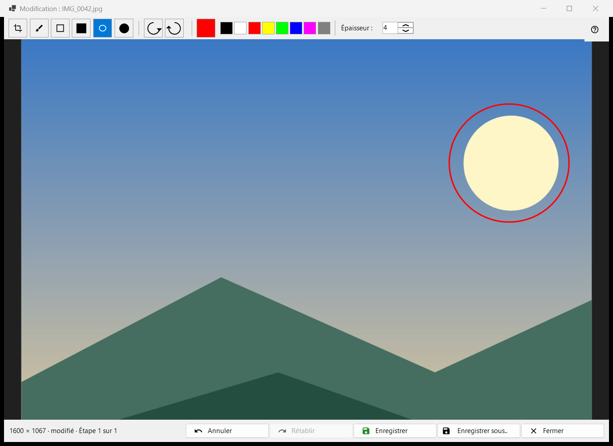
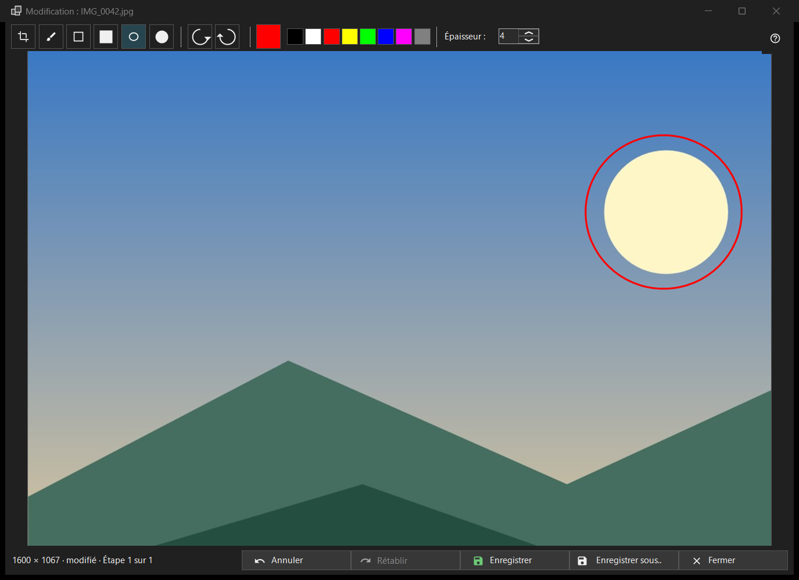

Modifier l'image
Objectif
Un petit éditeur pour une seule image fixe : dessiner des formes, rogner, pivoter et retourner, puis enregistrer par-dessus l'original ou sous forme de nouveau fichier. Il s'ouvre, avec le nom de fichier de l'image dans le titre, depuis le bouton Modifier de la barre d'outils ou le premier élément du menu de l'image, et uniquement pour une image fixe (pas pour une animation). L'éditeur relit le fichier et travaille sur sa propre copie.


Dans cet ordre
- Appuyez sur Modifier dans la visionneuse.
- Choisissez un outil, une couleur et une épaisseur.
- Dessinez sur l'image, ou rognez-la, pivotez-la ou retournez-la ; Annuler revient d'une étape en arrière.
- Appuyez sur Enregistrer pour écrire par-dessus l'original, ou sur Enregistrer sous.. pour un nouveau fichier.
- Fermez la fenêtre ; s'il y a des modifications non enregistrées, répondez à la question.
Les éléments
Outils
Dans la barre : Rogner, Pinceau, Rectangle, Rectangle plein, Ellipse et Ellipse pleine. Les touches sont C, B, R et O (les formes pleines n'en ont pas). Maintenez Shift en dessinant un rectangle ou une ellipse pour obtenir un carré ou un cercle. Survoler un outil affiche son nom et sa touche.
Couleur et épaisseur
Le bouton de couleur ouvre la boîte de dialogue des couleurs, et huit pastilles rapides se trouvent à côté (noir, blanc, rouge, jaune, vert citron, bleu, magenta, gris). L'épaisseur va de 1 à 64 pixels de l'image (4 par défaut) ; les touches [ et ] la modifient d'une unité. La couleur et l'épaisseur sont communes à tous les outils.
Rogner
Avec l'outil Rogner, tracez un cadre sur l'image. Le bouton Appliquer le rognage n'apparaît que tant qu'un cadre existe. Enter fait la même chose ; Esc retire le cadre sans rogner. L'image n'est coupée que lorsque vous appliquez le rognage.
Pivoter et retourner
Pivoter vers la gauche (Ctrl+[) et Pivoter vers la droite (Ctrl+]) font tourner les pixels. Les touches H et V retournent l'image horizontalement et verticalement. Cela modifie l'image elle-même, contrairement à R dans la visionneuse, qui ne fait tourner que l'affichage.
Annuler et Rétablir
Annuler (Ctrl+Z) et Rétablir (Ctrl+Y ou Ctrl+Shift+Z) parcourent un historique de 20 étapes au plus, dans une limite de mémoire. La ligne d'état affiche la taille et, après une modification, modifié avec Étape N sur M ; lorsque la limite supprime les plus anciennes étapes, elle indique Les anciennes étapes ont été abandonnées : limite de mémoire.
Enregistrer
Enregistrer (Ctrl+S) écrit par-dessus l'original et n'est actif qu'après une modification ; avant cela, son info-bulle indique Rien à enregistrer : l'image n'a pas été modifiée. Pour un JPEG, on vous le demande une fois par session : Le JPEG sera recompressé - c'est irréversible. La date de prise de vue et les autres données EXIF sont conservées. Le fichier est écrit sous un nom temporaire puis substitué ; si l'enregistrement échoue, la fenêtre reste ouverte avec la raison.
Enregistrer sous..
Ouvre une boîte de dialogue de fichier avec le nom suivi de (modifiée). Les formats sont PNG, JPEG, BMP, TIFF et WebP ; une image dans tout autre format est proposée en PNG. Le dossier temporaire d'une archive est refusé. Après l'enregistrement par-dessus l'original, la visionneuse le recharge ; un nouveau fichier dans le même dossier est ouvert ; un fichier ailleurs est nommé dans la ligne d'état.
Quand Enregistrer est désactivé
La ligne d'état indique Impossible d'écraser l'original, avec la raison : ce format n'est pas écrit, le fichier est en lecture seule, les droits d'écriture manquent, un autre programme utilise le fichier, le fichier a plusieurs pages ou images (seule la première est modifiée), il se trouve dans une archive, ou il est introuvable. Enregistrer sous.. reste disponible.
Fermeture
Fermer ou Esc ferme la fenêtre ; Esc annule d'abord un tracé en cours, puis retire le cadre de rognage. En cas de modifications non enregistrées, la question est : Les modifications ne sont pas enregistrées - Fermer l'éditeur et perdre les modifications non enregistrées ? Enregistrer enregistre d'abord, Ne pas enregistrer abandonne, Annuler (la réponse par défaut, ainsi qu'Esc) reste dans l'éditeur. Cette question est posée même lorsque les confirmations sont désactivées.